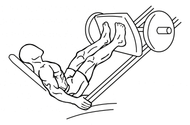

1.Squats
The alternate hammer curl is a great exercise for the biceps and the forearms. Set up by grasping a set of dumbbells and standing straight up with the dumbbells by your sides. You should be using a neutral grip, meaning your palms are facing your body. Bend your arms slightly to keep the tension on the biceps. Keeping your body fixed and elbows in at your sides, slowly curl up the dumbbell of your weakest arm (for most people this is their left arm). Squeeze the bicep at the top of the movement, and then slowly lower the weight back to the starting position. Repeat the same movement for the other arm. This is one rep. Now repeat to complete the set.

2.Lunges
Start by standing up tall. Step forward with one foot until your leg reaches a 90-degree angle. Your rear knee should remain parallel to the ground and your front knee shouldn’t go beyond your toes. Lift your front lunging leg to return to the starting position. Repeat 10 to 12 reps on one leg, or switch off between legs until you’ve totaled 10 to 12 reps per leg.
3.Leg press
Sit with your back and head flat against the seat and your feet positioned shoulder-width apart in the middle of the platform, says Jey. Keep your feet neutral (meaning your toes are directly above your heels). Keeping your core tight, glutes rooted in the seat, and your back straight against the seat, press through your feet (evenly through your toes and heels, says Jey), to push the leg press platform away from you and straighten through your knees. When your legs are fully extended—but not locked out—pause. Then, slowly and with control, bend at the knees to return the platform to its starting position. Don't rush through the motion, and keep your feet firmly planted on the platform throughout.